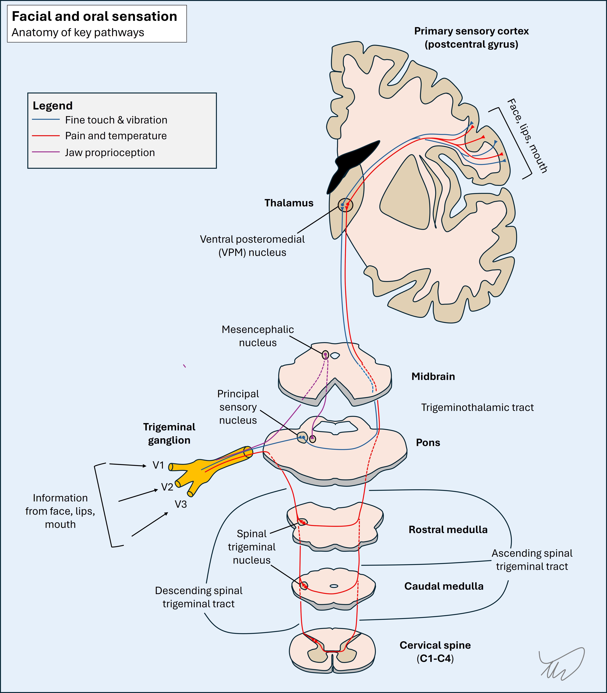
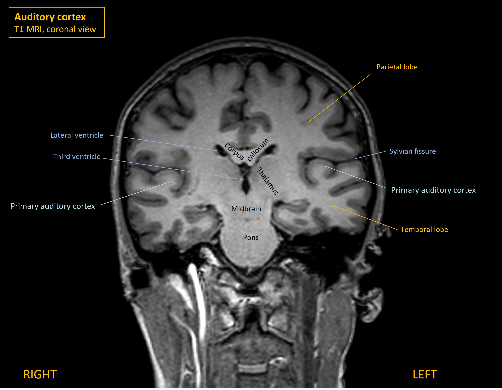
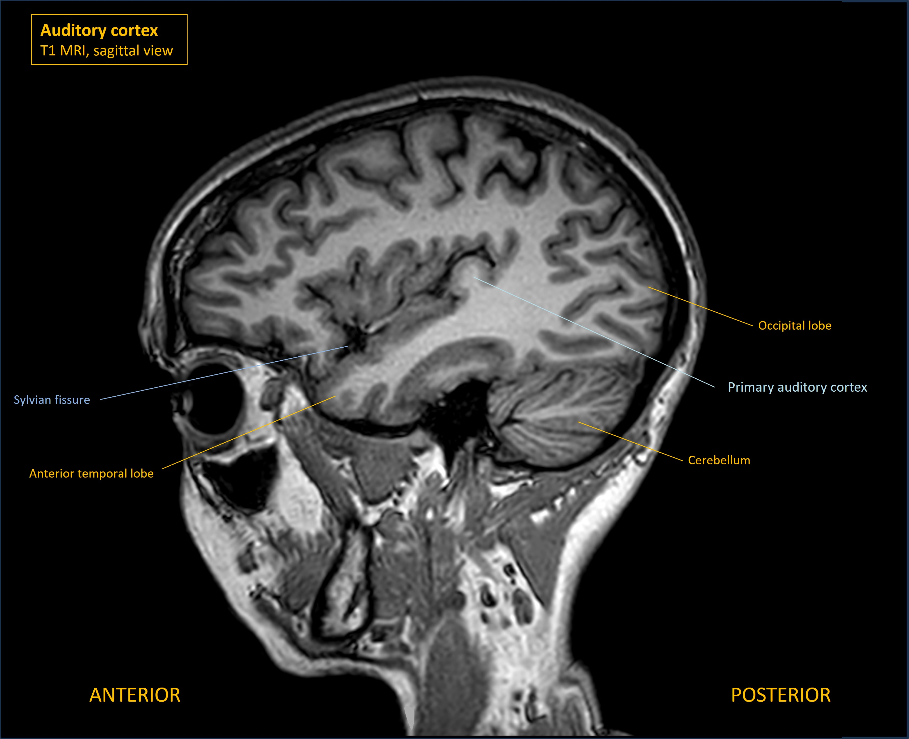
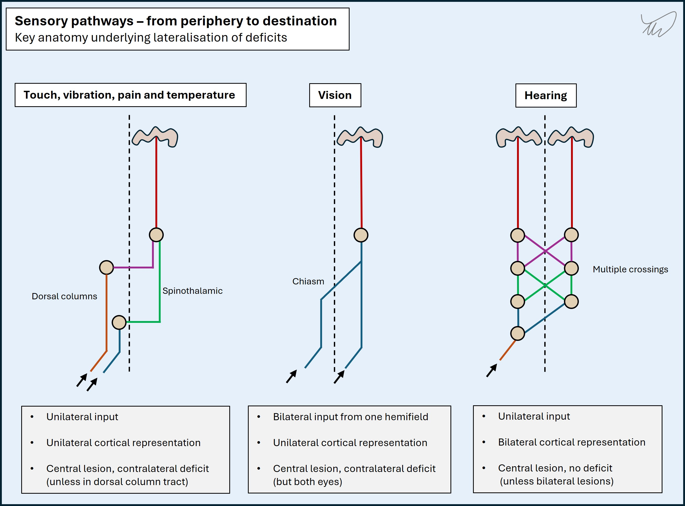
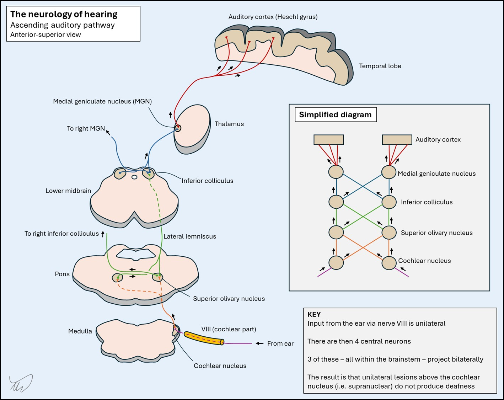
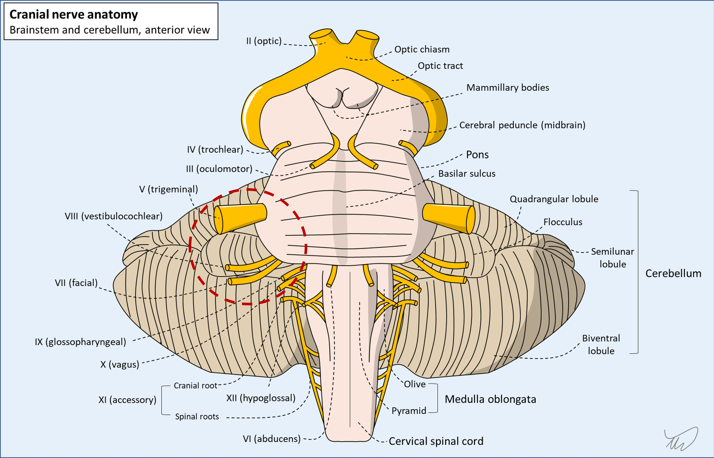

Case 21 - Facial numbness and hearing loss
Where is the lesion?
The patient’s symptoms are right-sided oral numbness progressing to affect the entire hemifacial area, then right sensorineural hearing loss and tinnitus, and some issues with balance. The main findings on examination were right hemifacial sensory loss (including absent blink reflex) and right ear sensorineural hearing loss.
Right facial sensation is carried through the trigeminal nerve (V) to the contralateral left sensory cortex (postcentral gyrus, parietal lobe). Different modalities are carried separately with different nuclei and tracts, but they all cross at various points then group together in the contralateral upper pons in the trigeminothalamic tract and ascend to the brain via the thalamus. We have reviewed this previously (case 3).

Hearing from the right ear is carried through the vestibulocochlear nerve (VIII) to bilateral auditory cortices (known as Heschl's gyrus, or the transverse temporal gyrus) - situated deep within the Sylvian fissures in the temporal lobe.


The balance issue likely also reflects vestibular dysfunction - although formal vestibular examination tests were not done.
The lesion must be somewhere unifying these. Let's consider options - starting in the brain.
A unilateral brain lesion could affect facial sensation - for example in the postcentral gyrus or thalamus. However, it wouldn't explain hearing loss. For anatomical reasons that will be explained, unilateral hearing loss is not seen in unilateral brain lesions.
Hearing is an unusual sensory pathway - it is bilaterally represented throughout the central pathways involved, from the brainstem to the eventual destination in the auditory cortex (temporal lobe).
This is in contrast to vision, which has input from both eyes - but the central representation within the brain is unilateral in terms of the pathways and their ultimate destination (occipital cortex) and also the hemifield of vision that is processed. Left-sided vision enters both eyes and travels to the right occipital lobe. There is bilateral input in terms of 'sides of the body' (both eyes), but a unilateral destination, with some fibres crossing at the chiasm and others remaining on the same side.
Even simpler are the sensations of touch, pain and temperature - which have unilateral input from the periphery, cross in the medulla or spine, and are unilaterally represented in the brain, contralateral to the side of 'input'. The diagram below compares these. It should be clear why unilateral brain lesions can produce unilateral loss of touch, pain and temperature sensations or vision (in both eyes) - but not hearing.

The pathway involved in hearing is more complicated - but the result is that, unlike hemisensory loss or binocular hemi-visual field losses due to lesions in the pathways above, there is no deficit of hearing due to unilateral lesions of the central auditory pathway. This is why we don't see acute unilateral hearing loss as a problem in people with stroke for example - whereas hemianopia and hemi-sensory loss are prominent, disabling features.
Each ear sends unilateral hearing signal through VIII to the brainstem, and the end-target is bilateral cortex sites - there is a ladder-like bilateral ascending pathway in the brainstem, with multiple synapses on either side, involving 4 neurons above the cochlear nuclei in the medulla and pons. It isn't worth memorizing the anatomy involved as it has minimal clinical relevance - other than understanding the core point that unilateral central lesions do not cause unilateral hearing loss. The anatomy is shown below, purely for interest.

The result of this is that unilateral central lesions above the nucleus do not cause unilateral deafness - because each side is carrying hearing signal from both ears. Even though some of the neurons are lost to each ear, this doesn't cause partial bilateral deafness either - there is sufficent signal still being sent contralaterally to maintain good bilateral hearing. Instead, the clinical consequence is more subtle - issues with sound localisation, rather than the primary perception of sounds of a given volume.
Deafness can arise from central nervous system damage - but only due to bilateral damage to brainstem or brain structures, and the hearing loss is bilateral.
The lesson is this: we see lots of unilateral hearing loss in neurology, but it doesn't reflect CNS lesions.
As we've seen in earlier cases, brainstem lesions can produce unilateral facial loss by affecting the pathways involved in touch (trigeminal principal sensory nucleus) and pain sensation (spinal trigeminal nucleus, a long structure). They can also affect the trigeminothalamic tract (i.e. trigeminal lemniscus) on its way up on the contralateral side of the brainstem - producing contralateral facial sensory loss.
However, as above, the bilateral ascending pathway means that unilateral brainstem lesions don't cause hearing loss. The only lesion site that can cause it is at the cochlear nuclei in the medulla and pons, but no higher up the 'ladder'. This is sometimes seen in some dorsolateral brainstem lesions.
It is technically possible that a unilateral lower brainstem lesion in dorsolateral areas could produce this combination of unilateral facial sensory and hearing loss – for example the lateral medulla or pons - but we would probably expect other features too, given the additional tracts and nuclei in these areas would typically be affected. These might include Horner's, ataxia, abnormal eye movements or other cranial nerve abnormalities.
In summary, this doesn't feel like a central lesion, so let's think about peripheral causes.
It's useful to briefly review the path of V and VIII. They must meet somewhere - cross-localisation will place this lesion.
Trigeminal nerve (V)Nerve V travels back from the face and mouth, where its branches provide sensation (and the motor part innervates the masticatory muscles), and V1-3 unify at the trigeminal ganglion in Meckel's cave, then the main trigeminal nerve travels back to the upper pons where it enters laterally. The different pathways are shown below. Similar to the spinal cord, there are different tracts serving touch/vibration and pain/temperature - and they take different routes, which in some cases leads to dissociated sensory loss. For a detailed review of this, look again at Case 3.
 Vestibulocochlear nerve (VIII)
Vestibulocochlear nerve (VIII)
Nerve VIII travels back from the inner ear in the temporal bone, carrying auditory signals from the cochlea and balance/motion signals from the vestibular labyrinth. It enters the cranial cavity via the internal acoustic meatus (IAM) - which VII and the labyrinthine artery also pass through. At this point it enters the CSF-filled subarachnoid space and travels in the cerebellopontine cistern to its entry point in the inferior pons, just behind VII (which it travels in the opposite direction towards the canal).
Both VII and VIII enter/exit the interior and lateral part of the pons at the cerebellopontine angle. V enters the pons a little higher up relative to these. The CPA is shown in the dotted red circle below - the key nerves can all be seen.

V and VIII take different peripheral paths, so there is no single lesion that would affect both their distal components. However, they both enter the pons quite near each other around the CPA. A CPA lesion would neatly account for both being affected - CPA lesions often produce the combination of V and VIII dysfunction.
What about the facial nerve (VII)?Some CPA lesions also affect VII, which also runs here - although, strangely, the major cause (see later) rarely does, despite directly contacting and displacing the nerve, which for some reason seems to tolerate this without causing facial weakness.
In other words, even though we might logically think a combined V-VIII pattern is unlikely to be due to a CPA lesion because VII is spared, so the problem must be elsewhere, this logic is flawed - VII often is spared by such lesions.
Other nerves and structures affected by CPA lesionsLarge CPA lesions can expand further and affect the lower cranial nerves exiting the medulla (IX-XII). They can also encroach on the cerebellum, causing ataxia, and compromise the fourth ventricle, causing hydrocephalus.
A CPA lesion is very likely here - and would be a neat explanation for this patient's problems. There is nowhere any more peripheral that these two nerves otherwise meet.
The only other thing to bear in mind is that this doesn't have to be a fixed, physical lesion in one place. We should consider two other possibilities.
Firstly, a host of inflammatory, infectious and neoplastic disorders can involve multiple cranial nerves at once (e.g. polyneuritis cranialis). In some cases these are all on one side, mimicking a fixed, focal lesion.
Secondly, disease in the meningeal space or in the skull base can sometimes affect several cranial nerves at once at separate points. Again, this can be unilateral or bilateral. However, this usually affects the lowest cranial nerves - for example causing hypoglossal (XII) or vagal (X) deficits.
However, the history here makes these less likely - the symptoms have been building up in the same area over months. In a more acute setting, these considerations would be more plausible.
What is the lesion?